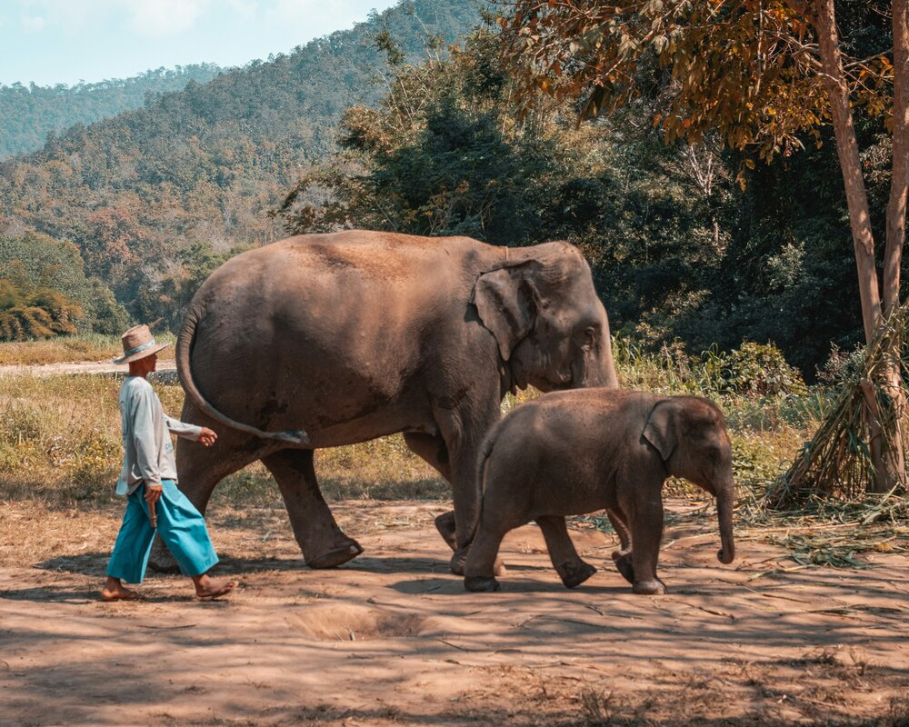
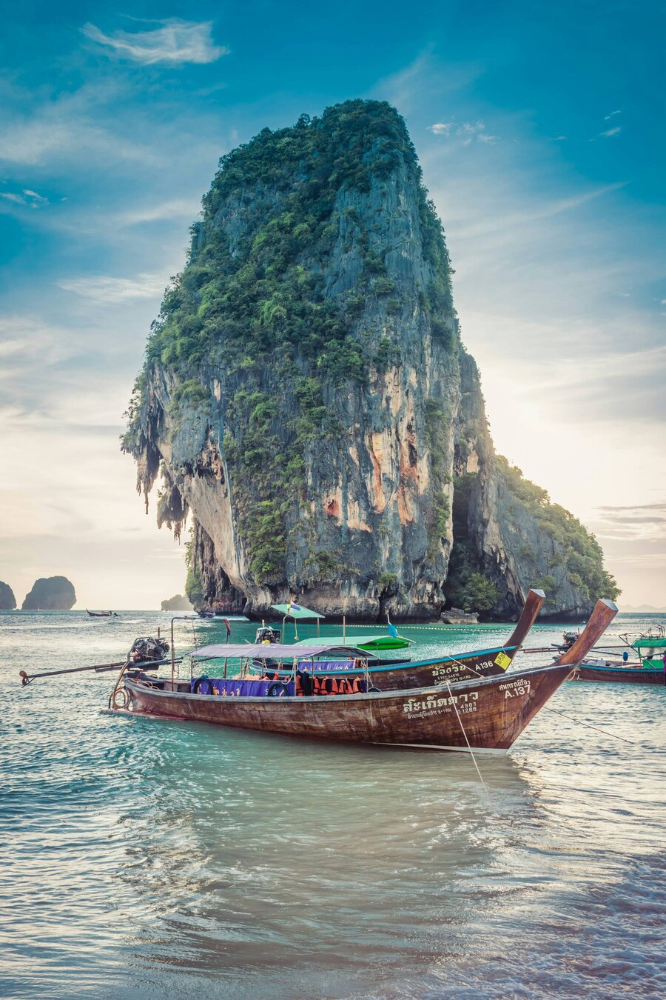
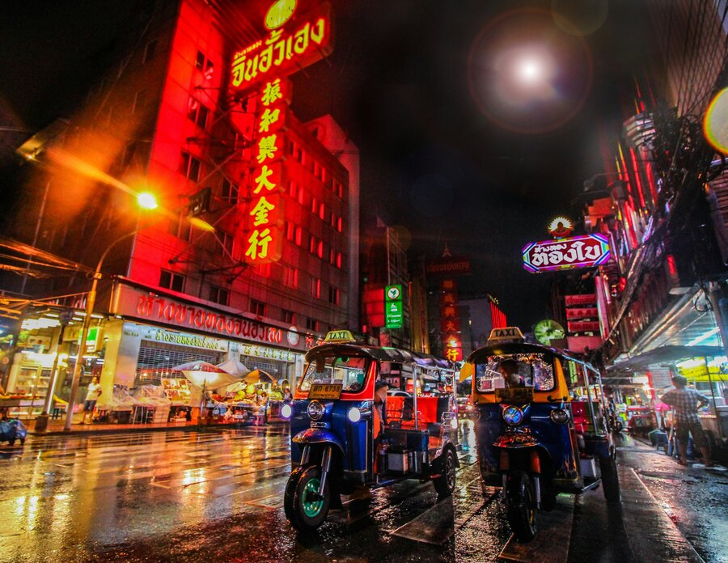

Where to stay and eat? For where to stay when traveling around Thailand, we always did hostels and we loved it! These are some of the hostels we stayed at and enjoyed. Bangkok: Niras Bankoc Cultural Hostel, this hostel is a great location, free breakfast, and helpful staff! Chaing Mai: About A Bed, this hostel was very nice, the owner is the kindest lady, and it is cheap! It is a little out of the way but me and my group loved it! Krabi: Pop-In Hostel, we stayed here twice! This hostel is nice, a 5 minute walk from the beach, cheap, and has a very fun social aspect.



For places to eat, you can almost never go wrong with the food in Thailand. In Bangkok we ate at Chinatown, Amritsr Sukhumvit Soi 22 had amazing Thai food, and La Monita had amazing Mexican food! China town is the cheapest place we ate and La Monita was a little bit more expensive but the serving sizes and food were worth it! In Chiang Mai, we loved eating at the Fern Forest Cafe, they had amazing brunch food although it was a little more expensive. We also loved eating at the street markets. If you stay at Pop In Hostel in Krabi, there is a restaurant right across the street called Saad Kitchen and they have amazing food for so cheap, we got all our breakfasts there. Lan Le Restaurant is right next to Au Nang beach, they have amazing burgers and fries. In Ban Mung we ate at a charming restaurant called Ban Mung steakhouse, which had both amazing food and views!